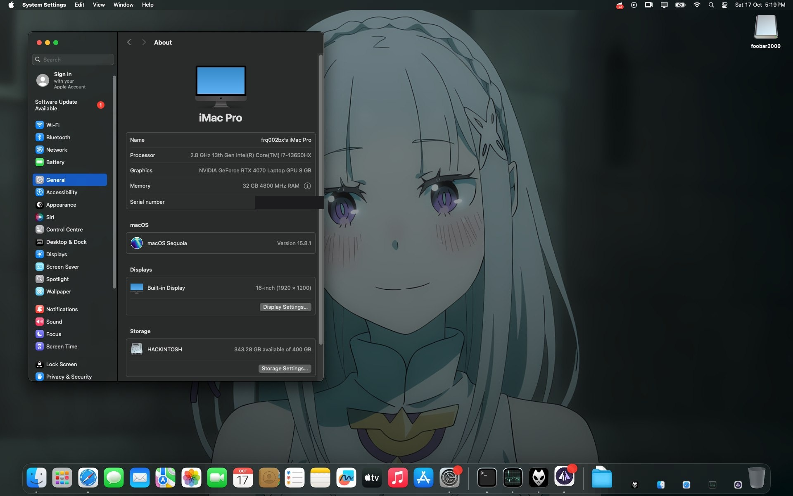

Hackintosh on the ASUS ROG Strix G16 (G614JI)
A working OpenCore 1.0.9 EFI for running macOS 15 Sequoia on the 2023 ASUS ROG Strix G16 G614JI — i7-13650HX, RTX 4070 Laptop GPU, 32 GB DDR5, 16″ 1920×1200 165 Hz. Built and verified on the actual machine, not a template.

What works
| Boot & install macOS 15 | working |
| Wi-Fi — Intel AX211 | working |
| Bluetooth — Intel AX211 | working |
| Touchpad — ASUE120D | working |
| Keyboard & brightness keys | working |
| Battery indicator | working |
| USB & Ethernet (RTL8111) | working |
| NVIDIA RTX 4070 — Metal (NullMoth) | working |
| HDMI external display | working* |
| Headphones / USB-C audio | working (alcid=24) |
| Sleep / wake | untested daily use |
| Internal speakers — CS35L41 over SPI | silent |
| Fan control | firmware curve |
* connect the monitor before power-on.
Get the EFI
SMBIOS values are placeholders — generate your own with GenSMBIOS (model iMacPro1,1).